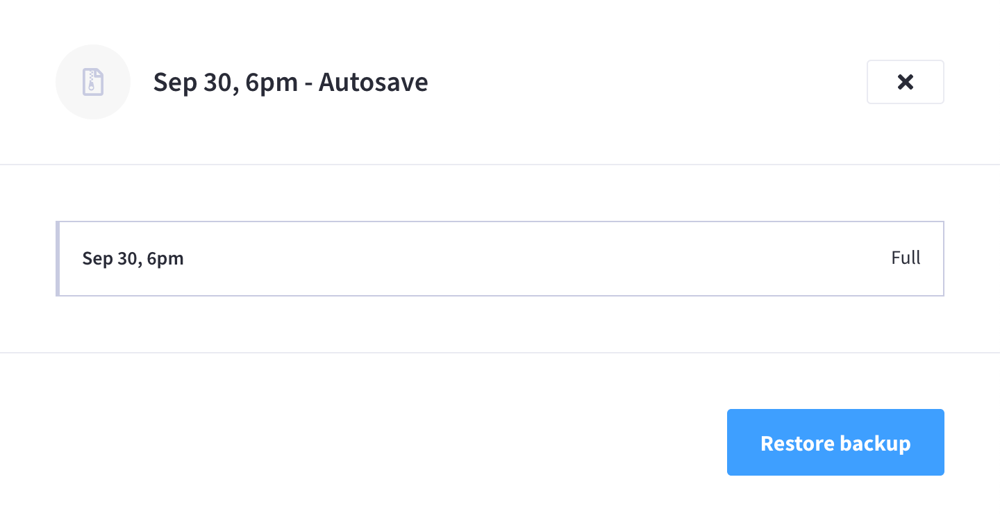
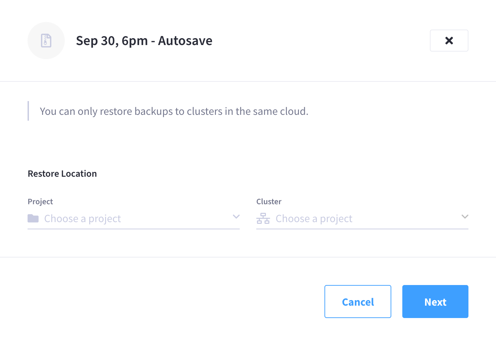
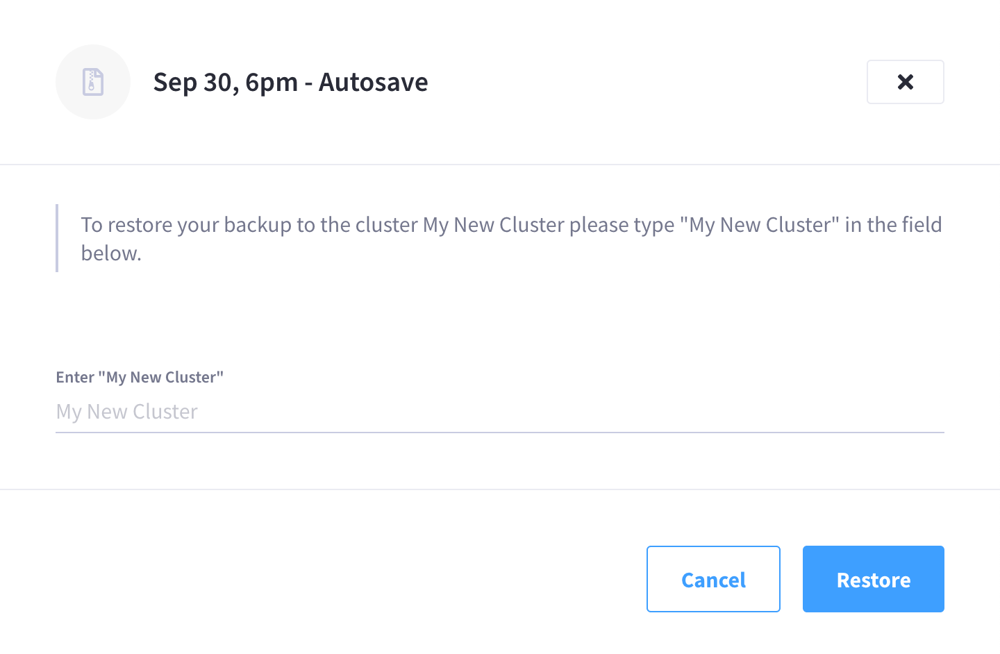
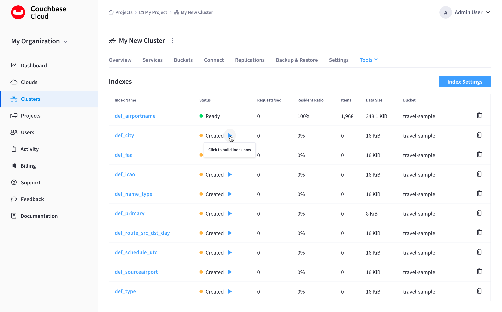

Restore a Backup
A cluster backup can be restored onto the same cluster that it was created on, or it can be restored onto another cluster.
Restoring data from cluster backups should only be considered in worst-case scenarios. Other methods of recovery, such as XDCR replication from a redundant cluster, should be considered first lines of recovery.
Guidelines and Limitations
-
The source cluster that originally created the backup must still exist and be accessible within the Couchbase Cloud UI.
Although backups are preserved in the connected cloud even after a cluster is deleted, the only user-accessible method for restoring a backup requires that you be able to access the source cluster’s Backup & Restore tab.
If you need to restore a backup from a cluster that is no longer available in the Couchbase Cloud UI (such as after an accidental cluster deletion), please contact Couchbase Cloud Support for assistance. In the meantime, it is highly recommended that you download the backup from cloud storage so as to ensure it is not deleted as part of the cluster’s retention policy.
-
A backup can only be restored to a cluster that is deployed in the same connected cloud as the source cluster that created the backup.
-
Backups can only be restored to a cluster that is running the same major version (or higher) than the source cluster that originally created the backup.
-
Data can only be restored to buckets that have the same names and conflict resolution methods as the buckets from the backup. Ensure that you’ve configured buckets on the target cluster that have the same names and conflict resolution methods as the ones you are trying to restore data from. If a bucket of the same name does not exist on the target cluster, no data from that bucket will be restored from the backup.
Any conflicts that occur during the restore will be resolved automatically using the conflict resolution method configured for the buckets. This means that if a key-value pair in the target bucket is newer than the one in the backup, then the one from the backup is not restored.
If the goal of the restore is to overwrite the current data with the data from the backup, it is recommended that you restore the data to a brand new bucket of the same name on another cluster. That way, all data will be restored in the state that it is in the backup. From there you can copy the data over to the desired bucket as you see fit.
-
When restoring from a Series backup, data will be restored from the latest Incremental backup in the series. The restore process will take into account any failovers that may have occurred in between the time that the backups were originally taken. If a failover did occur in between the backups, and the backup archive contains data that no longer exists in the cluster, then the data that no longer exists will be skipped during the restore. If no failovers occurred in between backups, then restoring a Series backup will restore all data from the series.
-
Restoring cluster backups is supported during rebalances and failovers. If a rebalance is in progress, the restore process will track any data movement around the cluster and ensure that data is restored to the appropriate node. If a failover occurs during restore, the restore process will recover so long as the failed node is removed from the cluster within three minutes. If the failed node is not removed, then the restore will fail.
Restore Bucket Data
|
Permissions Required
To restore bucket data from a backup, the following permissions are required:
|
-
Go to the Backup & Restore tab of the source cluster that created the backup that you wish to restore.
-
Go to the Clusters tab in the main navigation.
-
Find and click on the source cluster.
This opens the cluster with its Overview tab selected.
-
Click the Backup & Restore tab.
-
-
In the Backups list, find and click on the backup that you wish to restore.
This opens the backup’s fly-out menu.
 -
Click Restore backup.
-
Specify the Restore Location.
The restore location is the cluster that you wish to restore the backup to. This can be the same cluster that created the backup, or it can be another cluster in the same connected cloud.
-
Use the Project dropdown menu to select the project that contains the cluster that is to be the destination of the restore.
-
Use the Cluster dropdown menu to select the cluster that is to be the destination of the restore. Only clusters that are located in the same connected cloud appear in the dropdown menu.
Once you’ve selected the cluster, click Next.
-
-
To confirm that you’re restoring to the desired cluster, enter the name of the destination cluster.
 -
Once you’re ready, click Restore to begin restoring the backup.
Note that there can be a slight delay while the restore is scheduled, after which the fly-out will close.
Restoring Indexes
If GSI indexes were included in the bucket that you restored, they are automatically restored in a round-robin fashion among the current nodes running the Index Service. However, these indexes will only be created, not built.
The reason that indexes are created and not built is because Couchbase Cloud does not know the optimal index topology ahead of time. By not building the indexes, it gives you the option to manually move each index between nodes and build them yourself.
However, if you find the automatic index distribution acceptable, you can use the Couchbase Cloud UI to rebuild each index.
|
Permissions Required
In order to access indexes in the Couchbase Cloud UI, the following permissions are required:
|
-
Go to the cluster’s Tools > Indexes tab.
-
Go to the Clusters tab in the main navigation.
-
Find and click on the cluster on which you restored a backup.
This opens the cluster with its Overview tab selected.
-
Click the Tools > Indexes tab.
-
-
Each index that was restored will display a status of Created. Click the Play icon in the Status column for each index that you wish to rebuild.
